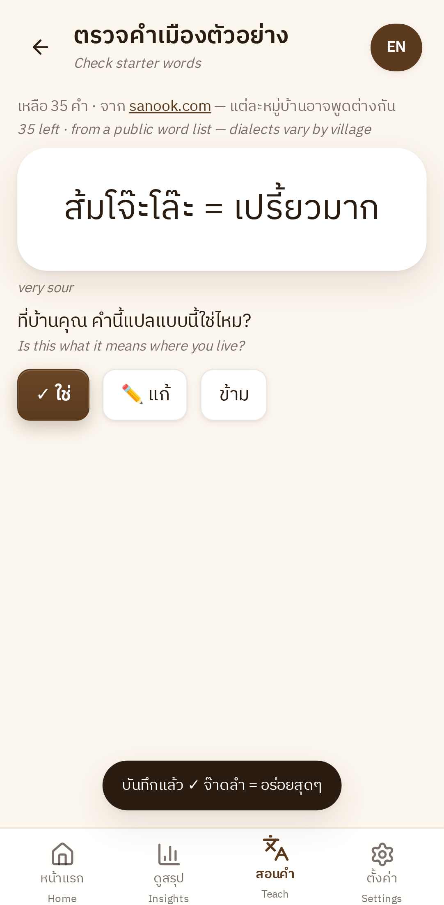

Live app · the guest
The guest answers in their own language.
- Picks 한국어 (Korean)
- Agrees to a plain-language consent
- Rates each tour step 👍 / 👎
- Types what to improve — and what they'd buy
- Hands the phone back. Nothing leaves it.
เราฟัง
Know what every foreign guest thought of your farm tour —
in Thai, offline, on the host's own phone.
So the host never learns which parts of the tour guests valued, what went wrong, or what they wanted to buy.
foreign visitors walk the farm, pick cherries, roast and taste
Thai is her written language; Northern Thai is how she thinks and talks
no laptop, and patchy signal where the tour happens
She wants to know which parts of the tour guests value — and what they would buy.
At the end of the tour, in their own language: 👍 / 👎 per tour step, then speak or type. Works offline.
Into 13 tour topics, liked or disliked — and flags anything it isn't sure about.
Weekly cards she can read or hear aloud, with the real guest comments behind every number.
The AI suggests. The host decides.
English captions are on for this demo — the host sees Thai only.
Sample data: real model outputs on held-out synthetic comments.
of comments sorted automatically
of those sorted correctly
go to a “not sure” list the host tags in two taps
Measured on a held-out synthetic test set (n = 275), with the 8-bit model the app ships. Accuracy on real guest comments is not measured yet.
one-time download on Wi-Fi — then no signal needed
to turn 11 s of guest speech into text, on the phone
bytes of guest data sent anywhere
Speed measured in Chrome emulating a Pixel 7 with a 4× slower CPU; a real-phone benchmark is next. All data stays in the phone's storage.

Weekly, topic-level feedback — even when guest and host share no language.
Guests who want to buy beans or products are counted, with their own words.
Directions, group size, timing and price problems surface before they become reviews.
No servers, no data plans, no per-guest cost. A web link hosts install once.
Open it on any phone or laptop and tap “Try the demo”.